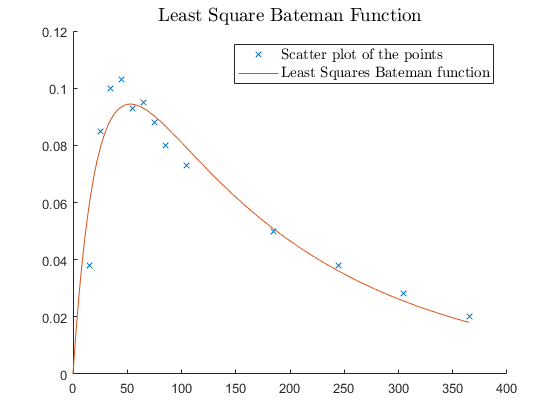

Contents
clear all;
close all;
home;
format long;
epsilon = 1e-6;
sigma = 1e-4;
rho = 0.9;
gamma = 2;
t0 = 1;
Rosenbrock
H0 = eye(2);
x0 = [-1.2 1]';
func = @Rosenbrock;
[Rargmin, Riterations, Rminval] = BFGSglobal(func, x0, H0, t0, sigma, rho,epsilon, gamma);
Least Squares
t = [15:10:85, 105 185 245 305 365];
y = [0.038, 0.085, 0.1, 0.103, 0.093, 0.095, 0.088, 0.08, 0.073, 0.05, 0.038, 0.028, 0.02];
m = length(y);
x0 = [0.05, 0.1, 0.4]';
H0 = eye(length(x0));
objFunc = @(x) leastSquares(x, @Bateman, y, t);
[LSargmin, LSiterations, LSminval] = BFGSglobal(objFunc, x0, H0, t0, sigma, rho, epsilon, gamma);
interval = 0:0.1:365;
for i=1:length(interval)
yPlot(i) = Bateman(interval(i),LSargmin);
end
hold on;
plot(t,y,'x');
plot(interval,yPlot);
leg1 = legend('Scatter plot of the points','Least Squares Bateman function');
set(leg1,'interpreter','latex');
set(leg1,'Fontsize',11);
title('Least Square Bateman Function','interpreter','latex','fontsize',14);

Results
fprintf('Rosenbrock argmin:\n %0.13f\n %0.13f\n',Rargmin(1),Rargmin(2));
fprintf('Rosenbrock iterations:\n %i\n',Riterations);
fprintf('Least Squares argmin:\n %0.13f\n %0.13f\n %0.13f\n',LSargmin(1),LSargmin(2), LSargmin(3));
fprintf('Least Squares iterations:\n %i',LSiterations);
Rosenbrock argmin:
0.9999999952279
0.9999999902395
Rosenbrock iterations:
34
Least Squares argmin:
0.0057427752588
0.0444069828743
0.1469252238159
Least Squares iterations:
29